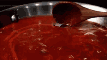
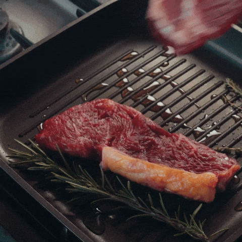
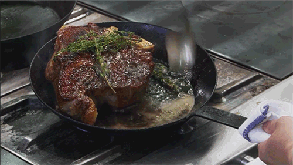

Knife Skills
Proper knife skills can make cooking faster and safer. Learn how to chop, slice, and dice like a pro.

How to Do It: Watch the video tutorial.
Perfecting Sauces
Learn how to make rich and creamy sauces that will elevate any dish to the next level!
How to Do It: Watch the video tutorial.
Searing Meats
Master the art of searing to lock in flavor and create a beautiful crust on your meat.
How to Do It: Watch the video tutorial.
Plating Like a Pro
Learn how to plate your dishes beautifully so they look as amazing as they taste.

How to Do It: Watch the video tutorial.
Braising
A slow-cooking method that turns tough cuts of meat into tender, flavorful masterpieces. Perfect for stews and comfort food.
How to Do It: Watch the video tutorial.
Tempering Spices
A crucial technique in Indian and Middle Eastern cuisine where whole spices are briefly fried in hot oil to release deep, rich aromas.

How to Do It: Watch the video tutorial.